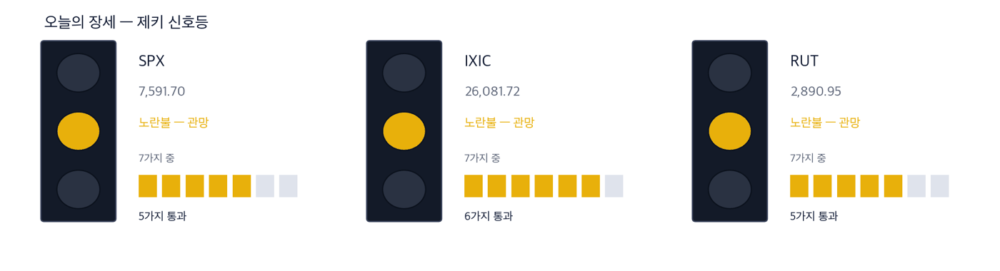
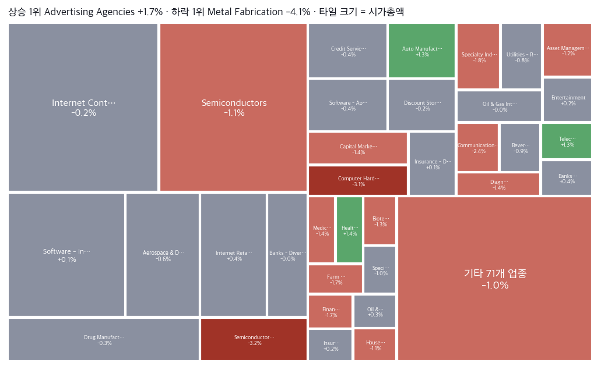
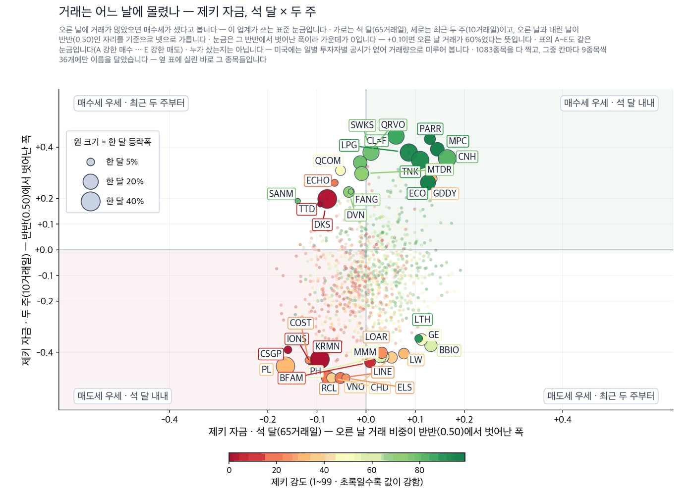
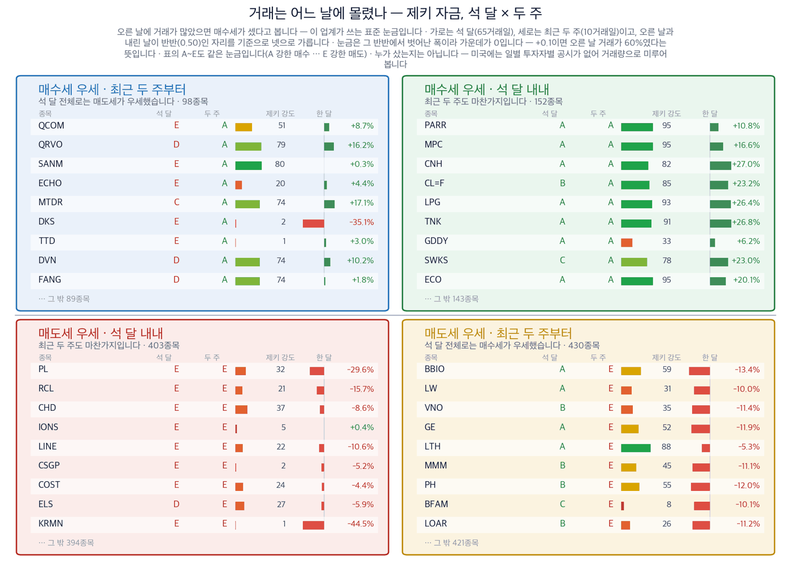

|
ZekiRex™ Apex US — 2026년 9월 11일
오늘의 판단 · 1/2
데이터 기준 9/10 (ET) 종가 · 밤사이 서울 9/11 종가(현지시간) |
ZekiRex™ |
|
|
|
THE REX CALL
서부텍사스유가 6.69% 오른 9월 10일, 금리는 곡선 전체가 함께 올랐습니다. 2년물이 4.38%, 10년물이 4.94%입니다. 하루 새 값이 다시 매겨진 것은 특정 업종이 아니라 돈의 값 자체였습니다.
4개 자리가 모두 차 있어 새로 담지 않았고, 손절에 닿은 종목도 없습니다. 다만 계좌는 3.75% 내려 같은 날 S&P 500의 0.58%보다 6배 넘게 내렸습니다.
오늘 반드시 알아야 할 것
1. 서부텍사스유가 6.69% 올라 배럴당 102.5달러로 마감했습니다. 이란 전쟁을 원인으로 꼽는 보도가 이어졌습니다. 2. 2년물 국채 금리는 4.38%로 뛰어 곡선 전체에서 하루 상승폭이 제일 컸습니다. 인하 기대가 인상 기대로 뒤집혔다는 뜻입니다. 3. 4개 미국 지수가 모두 내렸고 러셀 2000이 1.04%로 하락폭이 제일 컸습니다. 작은 회사가 먼저 이자 부담을 집니다. 4. 한국 증시 9월 11일 마감(현지시간)에서 코스피가 1.76% 내려 7,000선 아래로 떨어졌습니다. 한국 국고채 3년물은 4.01%입니다. 5. 미국 8월 소비자물가 발표가 9월 11일에 예정돼 있습니다. 기름값이 물가로 넘어갔는지가 이 숫자에서 처음 확인됩니다.
| |
 이 그림 읽는 법 | 켜진 등 | 오늘의 국면입니다. 초록은 매수 우위, 노랑은 관망, 빨강은 매수 자제입니다. | | 채워진 칸 | 7가지 조건 중 몇 개를 통과했는지입니다. 칸이 많이 찰수록 시장 구조가 튼튼합니다. | | 칸이 다 찼는데 노랑·빨강이면 | 다른 이유로 한 단계 낮춘 것입니다. 그림 아래에 그 이유를 적었습니다. |
|
최근 10거래일 국면 추이 (왼쪽이 과거) 방향 — 어디까지 왔나. 이 신호등은 7가지 조건을 세어 정합니다. S&P 500이 6가지에서 5가지로 내려왔고, 나스닥은 6가지, 러셀 2000은 5가지입니다. 3개 지수가 함께 채우지 못한 조건은 52주 저점에서 충분히 올라와 있어야 한다는 것입니다. 여기에 더해 S&P 500과 러셀 2000은 50일 이동평균선 아래로 내려왔습니다 — 9월 10일에 새로 빠진 조건이 이것입니다. 장기 구조는 3개 모두 온전해서 빨간불이 아니라 노란불입니다.
| |
| 오늘의 조치 | | 오늘 신규 매매 없음. 규칙이 요구하지 않는 날에 거래하지 않는 것도 하나의 결정입니다. |
|
| 종목 | 비중 | 평가금액 | 평가손익 | 현재가 | 손절가 | 여유 | 보유일 | 다음 이벤트 | | ASML | 24% | $2,391,088 | −$108,160 | $1,687.43 | $1,622.66 | +4.0% | 19일 | 실적 10-14 | | MU | 25% | $2,526,605 | +$27,478 | $977.41 | $889.44 | +9.9% | 19일 | 실적 09-30 | | MPC | 23% | $2,312,139 | +$55,503 | $392.42 | $352.36 | +11.4% | 9일 | 실적 11-03 | | DELL | 28% | $2,864,936 | +$364,974 | $506.62 | $406.71 | +24.6% | 19일 | 실적 11-27 | | 현금 | — | $89 | 아직 투자하지 않은 돈입니다 |
계좌 요약 | 시작 자본 | $10,000,000 | 2026-08-19 설정 | | 실현 손익 | −$244,938 | 판 종목에서 확정된 금액 | | 평가 손익 | +$339,795 | 들고 있는 종목의 장부상 손익 | | 현재 평가액 | $10,094,857 | 시작 대비 +0.95% | | 최고 평가액 | $10,487,944 | 지금은 고점 대비 −3.75% |
시작 자본에 실현 손익과 평가 손익을 더하면 현재 평가액이 됩니다. |
| 관문을 통과한 종목 — 자리가 없어 담지 못한 이름들 | | 에너지·정유 4 | | LPG Dorian LPG Ltd. | RS 93 | $54.41 | | DINO HF Sinclair Corporat | RS 95 | $107.72 | | PSX Phillips 66 | RS 93 | $258.51 | | CVE Cenovus Energy Inc | RS 91 | $33.34 | | 금융 3 | | SLDE Slide Insurance Hold | RS 90 | $24.45 | | MRX Marex Group Limited | RS 94 | $74.09 | | BFH Bread Financial Hold | RS 85 | $106.86 | | 반도체·하드웨어 3 | | STX Seagate Technology H | RS 97 | $862.33 | | AMD Advanced Micro Devic | RS 96 | $503.60 | | P Everpure, Inc. | RS 85 | $94.10 | | 소재·광물 2 | | CGAU Centerra Gold Inc. | RS 94 | $22.60 | | TECK Teck Resources Ltd | RS 82 | $65.90 | | 헬스케어 2 | | PACS PACS Group, Inc. | RS 97 | $44.85 | | KRYS Krystal Biotech, Inc | RS 90 | $345.55 | | 기타 1 | | GEO Geo Group Inc (The) | RS 91 | $31.38 |
| 왜 못 담았나. 규칙상 자리는 넷뿐이고 각 자리에 총자산 25%가 들어갑니다 — 한 종목이 −8%에 걸려도 계좌 전체로는 2% 손실이 되도록 맞춘 구조입니다. 자리를 비우는 길은 손절과 오실레이터 이탈 둘뿐이라, 더 좋은 후보가 나와도 갈아타지 않습니다.
통과 목록이 말하는 것. 60개가 35개 업종에 흩어져 있고 상위 3개 업종을 합쳐도 11종목(18%)뿐입니다. 시장의 강세는 넓습니다. 우리 4자리는 반도체·하드웨어 3, 에너지·정유 1로 나뉘어 있고 가장 큰 쪽이 반도체·하드웨어입니다 — 그래서 하루 등락이 지수와 평균 2.2%p 벌어졌고, 가장 크게 갈린 9/1 세션에는 S&P 500 보다 4.1%p 더 내렸습니다. 아래는 그중 종합점수 상위 15개이며, 매수 추천이 아니라 자리가 열리면 작업을 시작할 순서입니다. |
조건은 통과했지만 품질 하한에서 걸린 종목 | TG Therapeutics TGTX — 품질 하한 미달 | | Arcelor Mittal NY Registry MT — 품질 하한 미달 | | Dave DAVE — 품질 하한 미달 | | Millicom International TIGO — 품질 하한 미달 |
|
| 핵심 지표 | S&P 500 7,592 -0.58% · 고점 −2.7% 7,592로 0.58% 내렸습니다. 7가지 조건 가운데 통과한 것이 6가지에서 5가지로 줄었고, 새로 빠진 조건은 50일 이동평균선 위에 있어야 한다는 것입니다. 52주 고점까지는 2.7%가 남아 있습니다. 상단권 | 나스닥 종합 26,082 -0.65% · 고점 −3.7% 상단권 | 러셀 2000 2,891 -1.04% · 고점 −5.8% 2,891로 1.04% 내려 4개 지수 가운데 하락폭이 제일 컸습니다. 52주 고점까지 5.8%가 남아 큰 지수들보다 멉니다. 금리가 오르는 국면에서 작은 회사가 먼저 힘을 잃는 것은 대개 시장 전체보다 앞서 나타납니다. 상단권 | 미 국채 10년 4.94% 4.94%로 올라섰습니다. 다만 이날 더 크게 움직인 것은 2년물이며 4.38%가 됐습니다. 짧은 쪽이 더 오르면 통화정책 기대가 옮겨 간 것이고, 그때는 미래 이익으로 값이 매겨지는 사업이 먼저 값이 깎입니다. 과열 | 달러인덱스 99.1 99.1로 0.32% 올랐습니다. 금리가 곡선 전체에서 오른 것에 견주면 작은 움직임입니다. 이번 금리 상승이 아직 달러로 자금을 끌어오는 단계까지 가지는 않았다는 뜻입니다. 적정 | 포트폴리오 +0.95% 현금 0% · 보유 4종목 설정 이후 0.95%입니다. 같은 기간 S&P 500은 1.30% 손실, 나스닥100은 1.23% 손실입니다. 9월 10일 하루에만 계좌가 3.75% 내려 앞선 차이가 5.60%포인트에서 2.25%포인트로 줄었습니다. 설정 이후 |
|
| 한 줄 정리: 9월 10일 뉴욕에서 4개 지수가 모두 내렸습니다. S&P 500이 0.58% 내려 7,592, 나스닥이 0.65% 내려 26,082, 다우가 0.60% 내려 52,064, 러셀 2000이 1.04% 내려 2,891입니다. 같은 날 서부텍사스유가 6.69% 올라 배럴당 102.5달러가 됐습니다. 금리는 곡선 전체가 올랐습니다. 2년물 4.38%, 10년물 4.94%, 30년물 5.36%입니다. 지수 옆의 상단권 딱지와 저희 신호등의 노란불이 반대로 보일 수 있습니다. 값은 여전히 52주 고점 근처인데 조건은 하나씩 빠지고 있기 때문입니다. S&P 500은 7가지 조건 가운데 6가지에서 5가지로 내려앉았습니다. 빠진 조건은 50일 이동평균선 위에 있어야 한다는 것입니다. 값이 높은 것과 근거가 확실한 것은 다릅니다. |
|
|
|
판단의 근거 · 2/2
데이터 기준 9/10 (ET) 종가 · 밤사이 서울 9/11 종가(현지시간) |
ZekiRex™ |
|
|
| 오늘 반드시 알아야 할 것 |
|
금리 곡선 전체가 하루 만에 다시 매겨졌습니다
9월 10일 뉴욕에서 서부텍사스유가 6.69% 올라 배럴당 102.5달러, 브렌트유가 6.34% 올라 107.6달러가 됐습니다. 금리는 한쪽 끝이 아니라 곡선 전체가 올랐습니다. 2년물이 4.38%, 10년물이 4.94%, 30년물이 5.36%입니다. 짧은 쪽이 가장 크게 오른 것이 핵심입니다. 2년물은 통화정책 기대를 담는 자리이므로, 시장이 인하가 아니라 인상 쪽으로 기대를 옮겼다는 뜻입니다. 같은 날 구리가 4.95%, 금이 1.17% 내렸습니다. 경기가 좋아서 오른 금리였다면 구리가 함께 내리지는 않습니다. 왜 그런가. 두 지면이 같은 배럴을 다르게 읽고 있습니다. 미국 매체는 유가가 금리를 밀어 올리고 그 금리가 연방준비제도의 다음 선택을 바꾸는 국내 정책 문제로 씁니다. 한국 매체는 같은 사건을 환율과 조달비용으로 옮겨 적으며 밖에서 들어온 충격으로 다룹니다. 저희 계산은 앞쪽을 지지합니다. 2년물이 곡선에서 상승폭이 제일 컸고, 구리와 금이 함께 내렸기 때문입니다. 수요가 좋아진 것이 아니라 돈의 값이 오른 하루였습니다. 다음에 무엇이. 이 읽기는 이미 한 번 시험대에 올랐습니다. 9월 11일 03:10~03:45 PT (KST 9/11 19:10~19:45)에 나온 보도에서 서부텍사스유는 전날 올린 상승분을 되돌렸습니다. 그런데 국채 매도는 따라 물러서지 않았습니다. 블룸버그는 같은 시간대에 매도가 오히려 거세졌다고 전했습니다. 기름값이 원인이었다면 원인이 사라진 자리에서 금리도 함께 내려야 합니다. 그래서 다음 뉴스레터에서 확인할 것은 3가지입니다. 첫째, 2년 국채 금리가 4.38% 위에 머무는가. 둘째, 정유가 업종 순위 1위를 지키는가. 셋째, 반도체장비가 2위 자리를 지키는가입니다.
그래서 우리는: 저희 계좌는 9월 10일 하루에 3.75% 내렸습니다. 같은 날 S&P 500은 0.58% 내렸으므로 6배가 넘습니다. 이유는 분산이 아니라 집중입니다. 보유한 4개 종목이 전부 계산 설비라는 한 갈림길 위에 있습니다. 델이 5.35%, 마이크론이 4.90%, ASML이 2.43% 내렸고, 정유인 마라톤페트롤리엄은 1.8%에 그쳤습니다. 반대쪽 이야기도 적습니다. 금리가 물러서면 같은 구조가 같은 배수로 되돌아옵니다. 지금 값을 다시 매기게 한 것은 이 회사들의 실적이 아니라 할인율이기 때문입니다. 그래서 읽는 분이 반도체나 컴퓨터 설비를 들고 있다면, 확인할 것은 실적 전망이 아니라 2년 국채 금리입니다. 자리를 늘리거나 줄이기 전에 그 숫자가 어디로 가는지를 먼저 보십시오.
Rex Lens™
| |
| 그 밖에 알아야 할 것 | | 베선트, 월요일 대형은행 제재 예고 · 스콧 베선트 재무장관이 이란 전략의 일환으로 월요일에 대형은행 한 곳을 제재하겠다고 밝혔다고 CNBC가 전했습니다. (CNBC) → 제재 대상이 공개되기 전까지 유럽과 걸프 지역 은행주 전반에 대상 불확실성이 남습니다. | | 중간선거 공약으로 걸린 5,000달러 지급 · 공화당이 중간선거에서 이기면 5,000달러를 지급하겠다는 공약을 두고 뉴욕타임스는 채권시장이 먼저 반응할 사안이라고 짚었습니다. (NYT Business · CBS News · PBS NewsHour · Kyunghyang) → 스티브 스캘리스는 세부 사항을 의회가 정해야 한다고 말했고, 경향신문은 물가 압박 우려를 전했습니다. | | 분데스방크 총재의 에너지 비용 연계 발언 · 분데스방크 총재가 유럽의 추가 긴축 여부는 에너지 비용에 크게 달려 있다고 CNBC와의 대담에서 밝혔습니다. (CNBC) → 유로 지역의 다음 결정이 물가 지표가 아니라 유가에 연동된다는 뜻이며, 중동 국면이 유럽 채권까지 끌고 가는 통로가 됩니다. | | 에너지부, 2027년 경유 가격 전망 상향 · 에너지부가 이란 전쟁을 이유로 들어 2027년 경유 가격 전망을 갤런당 33센트 올려 잡았다고 액시오스가 보도했습니다. (Axios) → 운송비를 원가로 안고 가는 업종에서 내년이 아니라 내후년 원가 가정이 이미 올라갔다는 기록입니다. | | 인디펜던스리얼티와 센터스페이스 81억 달러 합병 합의 · 주거용 부동산투자신탁인 인디펜던스리얼티트러스트와 센터스페이스가 81억 달러 규모 합병에 합의했다고 월스트리트저널이 전했습니다. (WSJ US Business) → 금리가 19년 만의 높이에 있는데도 부동산투자신탁 쪽에서 대형 합병이 합의됐다는 사실 자체가 자금 조달 여건에 대한 신호입니다. |
| 한국과 미국을 잇는 것: 뉴욕이 닫힌 뒤 이 금리 이야기에 가장 먼저 값을 매기는 곳은 서울입니다. 한국 증시 9월 11일 마감(현지시간)에서 코스피가 7,000선을 내줬고 코스닥도 함께 내렸습니다. 같은 날 한국 국고채 3년물은 4.01%로 올라섰습니다. 미국에서 시작된 금리 상승이 한국 채권까지 끌고 갔다는 뜻입니다. 다만 방향만 가져오고 크기는 옮기지 않습니다. 한국은 원유를 거의 전량 수입하고 미국은 상당 부분을 스스로 생산하므로, 같은 유가 상승이 두 시장에서 같은 무게로 작동하지 않습니다. |
 Rex Pulse™ — 지수·가상자산 / 통화 / 원자재 / 채권 16종, 1년 추이와 50일 이동평균(점선) · 기준 뉴욕 9/10 종가, 서울 9/11 종가(현지시간) |
저희 신호등은 노란불입니다. 9월 10일에 달라진 것은 S&P 500이 50일 이동평균선 아래로 내려온 것이며, 러셀 2000은 그 아래에 계속 있습니다. 나스닥만 아직 위에 있습니다. 그래서 볼 것은 지수의 하루 등락이 아니라 S&P 500이 50일선 위로 돌아오는가입니다. 노란불에서는 새 자리를 늘리지 않고 있는 자리를 지키는 것이 저희 규칙이며, 자리가 4개 모두 차 있어 이번 뉴스레터에서 새로 담지 않았습니다. 다만 신호등이 매수를 막은 것은 아닙니다. 위험 관리는 종목마다 정해 둔 손절가가 합니다. |
 색은 당일 등락(짙을수록 큼), 타일은 시가총액입니다. 상단에 당일 상승·하락 1위가 적혀 있고, 큰 칸이 움직인 날이 지수가 움직인 날이라는 뜻입니다 — 아래 리더십 순위(추세의 힘)와 함께 읽으십시오. |
| 리더십 — 업종 강세 순위 | 강세 상위 | 업종 | 강도 / 자금 | 차이 | | 01 | Semiconductor Equipme… | | +91 | | 02 | Communication Equipme… | | +53 | | 03 | Computer Hardware +1 | | +19 | | 04 | Gold -1 | | -11 | | 05 | Electronic Components +5 | | +74 | | 06 | Semiconductors +17 | | +72 |
| 약세 하위 | 업종 | 강도 / 자금 | 차이 | | 01 | Footwear & Accessories | | -83 | | 02 | Apparel Retail -2 | | -68 | | 03 | Leisure -1 | | -70 | | 04 | Building Materials -1 | | -30 | | 05 | Residential Construct… -2 | | -36 |
|
| | 업종을 9월 10일 뉴욕 종가 기준 강세 순으로 세운 뒤 위쪽과 아래쪽을 나란히 실었습니다. 위쪽은 정유, 반도체장비, 전자·컴퓨터 유통, 통신장비, 컴퓨터 하드웨어입니다. 아래쪽은 광고대행, 신발·액세서리, 도박, 모기지금융, 식료품 소매로 모두 소비자 지출과 이자 부담에 묶여 있는 자리입니다. 위쪽은 설비와 원자재를 파는 쪽이고 아래쪽은 가계 지갑에 기대는 쪽입니다. 금리가 오르면 이 갈림은 더 벌어집니다. 아래쪽 업종이 순위를 되찾기 시작하면 저희 보유 종목의 근거도 다시 봐야 합니다. 74개 업종 중 위 5·아래 5개, 본문이 지목했거나 우리가 보유한 업종 1개를 더했습니다. 위 막대는 강도(RS), 아래 막대는 자금이고 오른쪽 숫자가 그 차이입니다. 자금은 20일 거래대금을 60일 평균과 견준 대용치이며 '기관이 산다'가 아니라 '거래가 몰린다'는 뜻입니다. 차이가 큰 곳은 확인해 볼 곳이지 매매 신호가 아닙니다 — 2026-08-31 사전등록 검정에서 이 차이가 이후 수익을 예측한다는 근거는 한·미 8개 셀 전부 확인되지 않았습니다. | | 수급 — 돈이 실제로 어디로 갔나 |  이 그림 읽는 법 | 점 하나 | 종목 하나입니다. 가로·세로 위치가 두 값을 그대로 나타내고, 가운데 가로·세로로 그어진 두 선이 기준선입니다. 네 귀퉁이의 이름표가 그 칸의 뜻입니다. | | 점 크기 | 최근 한 달 등락폭입니다. 오르든 내리든 크게 움직였으면 큰 점입니다. | | 점 색 | 제키 강도입니다. 초록일수록 주가가 시장에서 강합니다. | | 30종목만 | 이름이 겹치면 못 읽기 때문입니다. 가운데 몰린 나머지는 움직임이 거의 없는 종목들이라 뺐습니다. |
 이 그림 읽는 법 | 네 칸 | 가로와 세로 두 값이 각각 기준선을 넘었는지로 넷을 가릅니다. 오른쪽 위는 둘 다 넘은 곳, 왼쪽 아래는 둘 다 못 넘은 곳, 나머지 두 칸은 한쪽만 넘은 곳입니다. 칸 이름이 그 칸에 든 종목의 상태를 한 문장으로 적어 둔 것입니다. | | 가운데 두 칸 | 두 기간을 견주는 자리입니다. 글자 A~E가 있으면 이 업계가 쓰는 표준 등급으로, A는 강한 매수, B는 매수 우세, C는 매수와 매도가 반반, D는 매도 우세, E는 강한 매도를 뜻합니다(전체를 다섯으로 나눈 순위라 A가 상위 20%입니다). 숫자가 있으면 그 기간의 순매수 규모입니다. | | 칸마다 9종목 | 그 칸에서 움직임이 가장 큰 순서입니다. 나머지는 칸 아래에 몇 종목인지만 적었습니다. 옆 산점도가 이름을 다는 종목이 바로 이 9종목씩입니다. | | 한 달 막대 | 0을 가운데 두고 오른쪽이 상승, 왼쪽이 하락입니다. 길이는 같은 칸 안에서만 서로 견주십시오 — 칸마다 기준이 다릅니다. | | 제키 강도 | 1~99 순위입니다. 막대가 길수록, 초록에 가까울수록 그 종목의 주가가 시장에서 강합니다. |
미국에는 일별로 누가 샀는지 공시가 없습니다. 기관 보유는 분기에 한 번 그것도 45일 늦게 나옵니다. 그래서 이 그림은 사람이 아니라 거래를 봅니다 — 0.50 이 기준이고, 오른쪽으로 갈수록 석 달 동안, 위로 갈수록 최근 두 주 동안 오르는 날에 거래가 몰렸다는 뜻입니다. |
| Rex 25™ — 당일 등락률 전체 순위 | | 01 OII Oceaneering Internatio+4.29% | | 02 WT WisdomTree+1.51% | | 03 LPG Dorian LPG+1.45% | | 04 TGTX TG Therapeutics+1.35% | | 05 PACS PACS Group+0.56% | | 06 CHEF The Chefs' Warehouse+0.44% | | 07 CXW CoreCivic+0.12% | | 08 CVE Cenovus Energy-0.36% | | 09 DINO HF Sinclair-0.39% | | 10 ENVA Enova International-0.43% | | 11 MTRN Materion-0.55% | | 12 GEO Geo Group Inc (The) RE-0.73% | | 13 PSX Phillips 66-0.87% | | 14 OKTA Okta-0.94% | | 15 DAVE Dave-0.97% | | 16 BJRI BJ's Restaurants-1.10% | | 17 ● MPC Marathon Petroleum-1.76% | | 18 MRX Marex Group-2.15% | | 19 MT Arcelor Mittal NY Regi-2.58% | | 20 STX Seagate Technology Hol-2.66% | | 21 CGAU Centerra Gold-3.00% | | 22 AMD Advanced Micro Devices-3.36% | | 23 ● MU Micron Technology-4.90% | | 24 ● DELL Dell Technologies-5.35% | | 25 CVI CVR Energy— |
| 8,025종목 가운데 60개가 저희 기준을 넘었고, 그중 위 25개를 싣습니다. 하루 전과 견주어 3개가 들어오고 3개가 빠졌습니다. 들어온 쪽은 CVR에너지와 필립스66, 위즈덤트리입니다 — 앞의 2개가 정유입니다. 눈에 띄는 것은 하락 5개입니다. 그 맨 위 2칸이 델과 마이크론이고, 둘 다 저희가 보유한 종목입니다. 제키 강도로는 둘 다 98로 명단 맨 위에 있습니다. 이 둘이 같은 면에 함께 있는 이유는 재는 기간이 다르기 때문입니다. 하락 5개는 하루 등락이고, 제키 강도는 12개월을 봅니다. 하루가 12개월을 뒤집지는 못하지만, 같은 방향으로 며칠이 쌓이면 뒤집힙니다. 그래서 봐야 할 것은 이날의 하락폭이 아니라 제키 강도 98이 다음 뉴스레터까지 유지되는지입니다. 이 숫자가 내려가기 시작하면 컴퓨터 하드웨어와 반도체가 이끌던 국면이 끝났다는 뜻입니다. | | ● 표시가 우리 보유 종목입니다. 순서는 등락률만 따릅니다 — 하락 상위에 보유 종목이 있어도 그 자체가 매도 신호는 아닙니다. 매도는 −8% 손절과 오실레이터 이탈, 둘뿐입니다. |
| 보유 비중 — 하한 8% / 진입 25% | | Dell Technologies DELL28.4% | | Micron Technology MU25.0% | | ASML Holding ASML23.7% | | Marathon Petroleum MPC22.9% |
25%는 진입 시점의 크기이지 보유 한도가 아닙니다. 오른 종목을 크다는 이유로 줄이지 않습니다. |
 설정 이후 누적 수익률입니다. 계좌 0.95%, S&P 500 −1.30%, 나스닥100 −1.23%입니다. 그림에서 봐야 할 것은 수준이 아니라 9월 10일에 꺾인 기울기입니다. 앞서 있던 차이가 5.60%포인트에서 2.25%포인트로 줄었고, 그 일이 하루에 일어났습니다. 원인은 분산이 아니라 집중입니다. 보유한 4개 종목이 전부 계산 설비라는 한 갈림길 위에 있어서, 금리가 오른 하루에 4개가 함께 값이 깎였습니다. 그래서 이 그림은 성적표가 아니라 구조를 보여 줍니다. 같은 구조는 금리가 물러설 때 같은 배수로 되돌아옵니다. 봐야 할 것은 간격의 크기가 아니라 수익이 계산 설비 밖에서도 나오기 시작하는가입니다. |
| 2026-09-10 종가 기준 심사 8,025종목 중 등급 산출 4,004종목 가운데 60종목이 조건을 통과했습니다. 조건 통과는 매수 추천이 아닙니다. |
| 출처: 야후 파이낸스, 16:00 ET 종가 · 서울외국환중개 고시환율(네이버 금융) · 네이버 금융 · 야후 파이낸스 |
|
본 리포트는 정보 제공 목적이며 개별 투자 자문이 아닙니다. ZekiRex™ Apex US는 1,000만 달러 규모의 모의 포트폴리오를 규칙 기반으로 운용합니다 — 실제 계좌도, 주문도, 체결도 없습니다. 표시된 성과에는 수수료와 세금, 매매 시 가격 미끄러짐이 반영되지 않았습니다. 종목 자료에는 상장폐지된 회사가 빠져 있습니다. 그래서 성과가 실제보다 높게 나오는 치우침(생존편향)이 있습니다. 과거의 성과는 미래를 보장하지 않으며, 투자에는 원금 손실 위험이 따릅니다. |
| This is the Rex Way, ZekiRex™ |
|